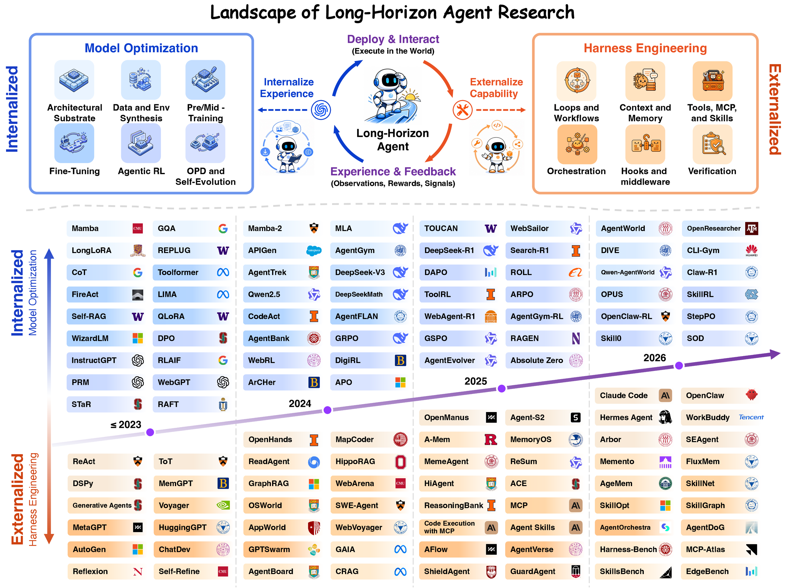

01研究背景与问题定义
长程任务的困难不只是运行得久或输入很长，而是许多决定彼此依赖：一个错误假设会改变后续检索与行动，一次遗漏的状态会影响跨窗口衔接，一次成功又可能需要转化为下次任务的经验。若按单个模型或单个记忆模块描述系统，最终进步究竟来自哪里就容易混淆。
这篇综述把长程能力定义为基础策略与外部 Harness 耦合后的系统属性。它用执行跨度拆解问题，再以外部运行结构和内部能力优化组织技术。价值在于提供分析坐标：面对一个新系统，应先问它改变了哪种状态、哪一层控制以及什么学习信号，而不是仅凭“自主”“长期”或“自进化”等名称判断能力。
| 层级 | 跨越的边界 | 核心能力需求 |
|---|---|---|
| H1：上下文内 | 多个相互依赖的推理与行动步骤 | 维持目标、规划并核查中间结果 |
| H2：跨上下文 | 单一活动窗口容不下整条执行 | 外部记忆、状态重建与跨窗口衔接 |
| H3：跨任务经验 | 以前任务应影响以后的处理方式 | 提炼、选择并持续修正可复用经验 |
02方法与技术路线
综述的“技术路线”是一套系统分析模型。它不提出需要照着实现的统一代理，而是把运行中的耦合关系与跨时间的能力演化分开说明。
组装可见状态
从观察、历史、记忆与任务目标形成当前上下文；可见输入是环境状态的部分表示。
策略提出行动
模型根据当前上下文选择推理、工具调用或回答；其判断受所见信息限制。
运行层执行和检查
工具与环境产生结果；验证、记忆与恢复机制决定后续状态及何时终止。
外部化 Harness 演化
更新工作流、上下文、工具、编排或检查逻辑；改变模型怎样被调用。
内部化模型优化
通过数据、环境、微调、强化学习和蒸馏改变参数；改善策略自身决策。
耦合系统为什么不能拆成“模型加几个工具”
Harness 决定什么时候调用模型、让它看到什么、怎样验证并执行动作，以及什么状态能够跨步骤保存。这些选择会改变模型遇到的决策问题，因此耦合不是简单叠加组件。相同模型可能因信息组织或恢复规则不同而走出不同轨迹。
环境又不等于上下文：真实状态可能部分不可见，当前上下文也可能是有损摘要。模型错误既可能来自判断能力，也可能来自关键证据未被送入输入。综述据此把长期记忆、工具和核查放回同一执行闭环，而不把每个模块的局部指标当最终能力。
H1–H3 用来定位能力缺口，而非简单分级排名
上下文内多步任务仍可能很难，跨窗口也不自动意味着比所有 H1 任务更高级。三个层级主要标记新出现的状态与经验要求：窗口更换后什么必须延续，任务结束后什么值得保留，以及保留内容如何改变以后行为。
这个视角有助于识别伪迁移：如果系统每次任务都重新开始，只有很长的单次上下文，它可能展示较强 H1 而没有检验 H3；若有长期库，却只存记录而从不影响未来决策，也不能仅凭持久化宣布获得经验学习。
外部机制怎样被内部能力吸收
外部化为模型暂时不可靠的能力提供显式支架，例如工具合法性检查、状态管理和恢复。训练可把部分行为吸收到策略内部，减少外部提醒；更强策略也可能使用更复杂的 Harness。综述用这种双向变化组织训练、数据合成和系统工程。
“可以内部化”并不等于所有规则都应被模型学习替代。执行权限、账本或不可逆动作边界可能仍需外部强制。论文给出耦合视角，具体机制该放在哪里，则要由正确性要求、可审计性和成本决定；这属于由框架推出的设计判断，并非综述已证明的统一最优分工。
论文原始结构图 · 点击对照

03实验设计与结果分析
综述提供哪类证据，而非哪类榜单
| 要检验的能力 | 需要观察什么 | 常见不足 |
|---|---|---|
| 长轨迹可靠性 | 依赖链长度、目标保持和恢复结果 | 仅报告运行小时数 |
| 跨窗口连续性 | 关键状态召回、重新初始化后的行为 | 仅报告最大上下文长度 |
| 跨任务改进 | 冻结或更新经验后的留出收益 | 在同一任务反复测试 |
| 系统收益归因 | 模型、Harness、反馈与预算匹配 | 把整个系统分数视为模型能力 |
该论文主要通过文献、公开系统文档与基准组织证据，不提供统一重跑所有技术的受控试验。因此它支持的是概念区分与技术版图，不是证明某条技术路线已整体胜出。把分类表直接读成性能比较，会超出其研究设计。
为什么不同长程基准不能只排一个平均分
终端、浏览器、代码和多模态环境具有不同观察形式、动作约束与副作用，失败恢复难度也不同。即使最终都报告成功率，允许的反馈权限与计算机会仍会改变其含义。更长轨迹可能意味着更难的依赖，也可能只是接口低效，必须结合任务和预算解释。
作为综述，最有用的评估产物是指出这些必须控制的变量。文中引用的时间跨度趋势来自外部测量，不是本文证明的普遍能力定律；不宜据此精确预测任意领域何时达到某个持续执行时长。
04贡献、局限与综合评价
贡献是建立能追问因果位置的统一语言
框架把“长程”从模糊时间标签转为依赖与状态问题，把代理从单一模型转为可训练的耦合系统。它能帮助判断一项改进究竟作用于输入、运行控制还是参数，也使跨窗口和跨任务能力需要什么证据更清晰。
能力在模型与系统之间迁移，未必意味着因果可加
框架把外部支架与内部优化画成相互促进，但二者也可能替代或冲突：强模型可能忽略过时提示，严格工作流也可能限制探索。若只测完整系统升级，很难知道哪种变化可迁移到别的组合。因而系统能力不宜拆成模型分数加 Harness 分数；真正有价值的证据应报告两者交互项，以及不同任务跨度下哪种耦合产生收益。这个限制并不削弱分类的用途，却要求把“共同演化”作为待检验关系，而非已经成立的普遍规律。
统一分类不等于已经发现统一机制
多个系统都可以写成模型—Harness 耦合，但其难点仍可能完全不同：一个受检索召回约束，另一个受不可逆动作或稀疏奖励约束。分类的覆盖面越大，概念就越可能失去预测力。如果不能根据分类预期哪些干预有效，框架可能主要是整理文献。
对这一点，更有力的检验是预先按状态跨度和主要失效机制分组，再在同模型与预算下交换记忆、恢复或训练干预，观察分类是否预测收益。若 H2 系统稳定受益于状态重建、而 H3 需要额外经验选择机制，层级就获得超出命名的经验支持。现阶段最稳妥的判断是：它提供了有用的研究坐标与证明负担，具体技术之间的因果关系仍需受控实验填实。